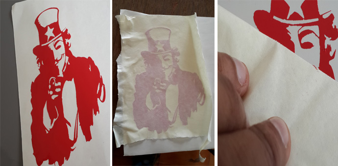
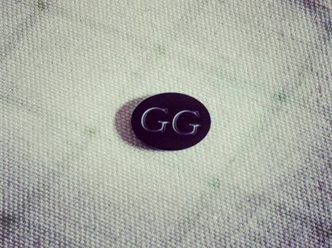
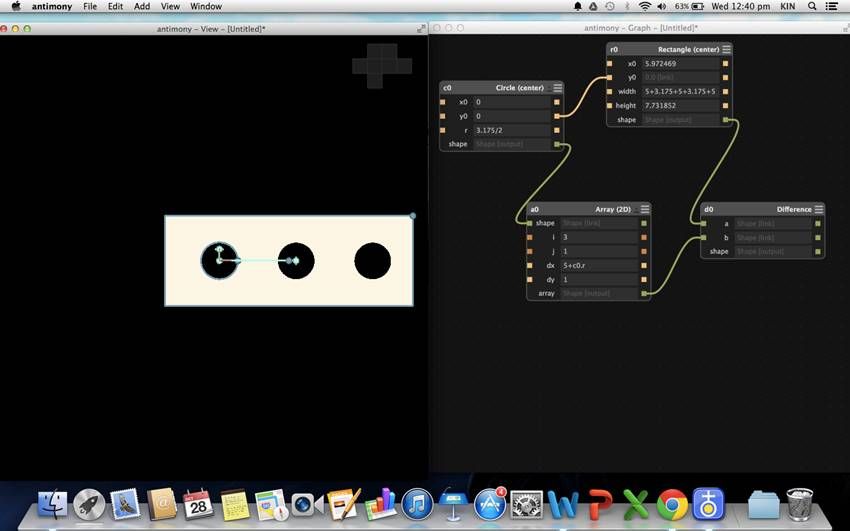
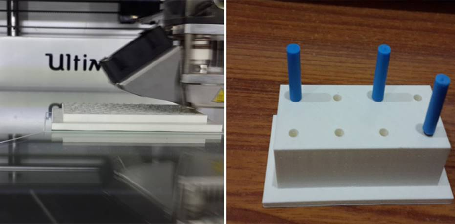
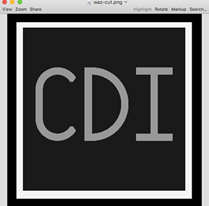

WEEK 2
DAY 1
Vinyl Cutter
Use – To make
stickers and flexible PCBs’.
The first step was to configure our laptops so that we could
print using a Roland Vinyl cutter.
Add Printer & Setting up Fab modules
To do this type in localhost:631/ on
any browser where we can access CUPS (Common Unix Printing System). The CUPS is
a modular printing system for Unix-like computer operating system.
Steps: - > Go to Administration Section -> Add Printer
(Ensure that printer is connected) -> Select Roland GX24 -> Give Name as VINYL
-> Select Make “Raw” and Model “Raw Queue” -> set default options.
And Voila! we have added Roland GX
24 to the printer list.
Then we started off with how to use the Roland Vinyl cutter
machine.
These are the standard settings of the Vinyl Cutter:
·
Pen force +2 always
·
Force and other settings are to be done from fab
modules.
·
W : 127mm
·
L : 441mm
Francisco tried to cut out a sample and the cut wasn’t deep
enough. A test cut was made by the blade, a circle and a square enclosed in it.
The test is complete if you are able to remove the circle without removing the
square inside. This did not happen (the square came off) and then we decided to
investigate. After this we tried do the following: adjusting pen force,
adjusting blade length and replacing with Teflon, none of which worked.
He first removed the blade and inside the enclosure was
waste of vinyl cut earlier, this was cleaned out. The issue we found out on
examining the bit under a digital microscope camera was that, the bit was an
old one, edges eroded & end blunt.
Solution : The blade was replaced
and the issue was rectified.
The ideal length of the blade should be just a bit sticking
out.
We used the Fab Modules to insert the image and convert it
(or use GIMP, as I did) to completely into black and white and also to input
the design into the vinyl cutter.
Steps:
·
First select a picture
·
Make sure you can convert the entire picture and
its sections into Black & White (B&W). *Hitch - Initially a picture
that I selected, of the Dark Sith
Lord, Darth Vader (Star Wars) had portions of white over black and also some
gray areas, thus this was not fully converted as clear B&W and therefore
can’t cut it properly.
· Either convert it to B & W, if not, the cut cannot be done properly.

The process
Note: The vinyl
machine automatically measures the length of the roll but tt
leaves about 2 inches of the material uncut, reason being the sensor that
measures the sheet is placed farther away. It does not estimate the distance
between the sensor and the cutting area. So if one needs to use the entire vinyl
make sure it can be cut with 2 -3 inches away from the end of the sheet.
I printed a Guy Fawkes mask on top of a man posing like the
famous 20th Century poster of Uncle Sam calling Young men to enlist
for national service. Firstly,after
the sticker cut has been made, the unwanted vinyl needs to be removed. Then the
vinyl design needs to be applied on another sticker and then transferred to the
required surface, and in my case, a laptop.
DAY 2
Laser Cutter
Model Name : Trotec
100
The Laser Cutter uses a LASER (Light Amplification by
Stimulated Emission of Radiation) Class 4 beam. The Lases in this range have
more than 500MW output and can severely damage the skin & eyes. Therefore
this machine must be handled with utmost attention.
WORD OF CAUTION: Never leave the laser cutter unmanned, “if
you see one unattended, shut it down”, says Franc. There are good chances of
catching fire in the laser cutting process depending on the material used.
We cut out a Batman design downloaded by another participant
at the Pre Fab academy, Abhilash. We tried out different power values for the
beam and the speed was kept mostly constant at 3. The different outcomes with
specs written on the side are given below:

Laser Cut Button
Also, in terms of accuracy slower the speed is set at, the
better.
DAY 3: 3D Printer and
Designing for the 3D Printer.
So this was the day Francisco introduced us to this amazing
new thing called Antimony(not the metal sb-stibium,but the software) which lets us design almost
anything from scratch. It wasn’t the easiest of tools to begin with, nor was it
open to import files from outside but it had to be tamed.
Again, taking cues from our Guruji
I decided to make something useful or utilitarian in the fablab
instead of moving elephants or Star Wars figurines- Franc says they are in
regular demand in the Beach Lab at Sitges, but Franc
does not promote it.
With the help of my co-workers I designed and printed a
milling bit holder for the bits of the modela. After
the printing was done, the bits were successfully placed in the 6-hole holder,
and a smiling photograph clicked, I tried to take out the bits. That is when I
realized the design flaw in the holder. My fingers wouldn’t go in between two
bits since they were too close to each other.

Antimony Design
Then it had to be redesigned and redone for a new version
2.0.
The resultant was :

MODELA: Molding
before casting
The day started with an introductory video to Modela (Link ).
At first I designed something like a simple abbreviation or
insignia of the non-profit I am associated with, CDI (the Centre for
Development Initiatives), but looking at the state of a similar design milled
by another participant, I was disillusioned and settled for a flower design
instead that I designed on Antimony.

Note : The modela
has two kinds of bits, one of 1/64 size and the other of 1/32 size(bigger). We
use the bigger size bit for milling wax. One needs to
For example, while trying to mill “CDI” or “Fablab Kerala” earlier, one needs to ensure the model
design size & font size of the text is big enough for the drill bit to go
inside and carve out the letters properly. Always keep in mind the size of the
bit with respect to size of the design.
Also, before we mill the wax according to our design, we
need to change the permissions once: on /ttyUSB0.
In terminal type the following command:
$ sudo chmod 666 /dev/ttyUSB0
The wax blocks available in the fablab
are quite thick and this needs to be cut in half before being used for milling.
Cutting the wax can be done using the Sawing machine at the Fablab.
An example of how to cut wax properly:
Laser Cutter
Assignment – Milling Board
The milling board or bed plate in the Roland Modella machine,
which was used to mill circuits on was made of metal. Therefore we needed
another separate one to mill wax on it. Francisco asked us to get a few others
made on Vinyl for milling wax. The objective was also to:
·
Learn to use the laser cutter better
·
Make stuff useful to Fablab
& other users
·
With multiple boards, someone at the lab using
the machine to mill a circuit, but is unfinished could just remove the board
and make way for someone else who wants to mill wax.
We measured the board and the squares on the grid inside it.
Squares of 1cm each. With a little bit of help from Puneeth
who designed the grid & the guidance of Francisco, we cut the vinyl on the
laser cutter. In this design, the grid needed to be etched and the outline
needed to be cut by the laser.
When we started cutting we noticed that only the slanting
corners were being etched at first. On examination, we noticed a few hitches
that occurred in this process were:
·
The original design file had a few corners in
red. The laser cutter does not cut these.
·
The design file that was made unfortunately
could not separate the red corners alone, without bringing along with it lines
in the grid as well.
The immediate solution was to superimpose black perfectly
over the red lines, rather than design a new one.
DAY 5 – Introduction
to Shopbot & Video Conferencing
We started off with an intro video on shopbot(link). Shopbot is a low-cost CNC for automated 3D control of
routers, drills, and other cutting tools.